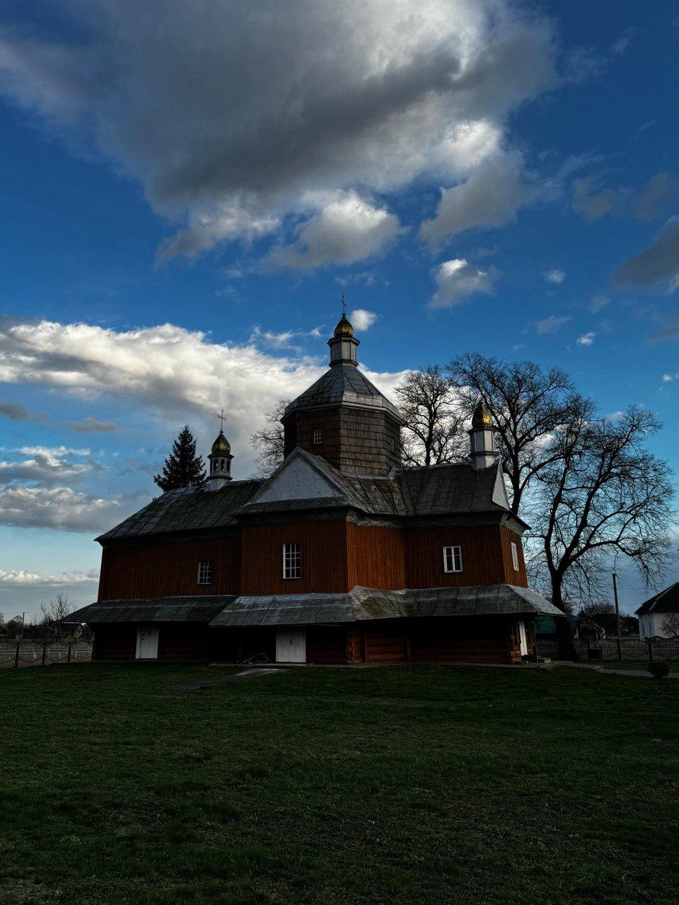
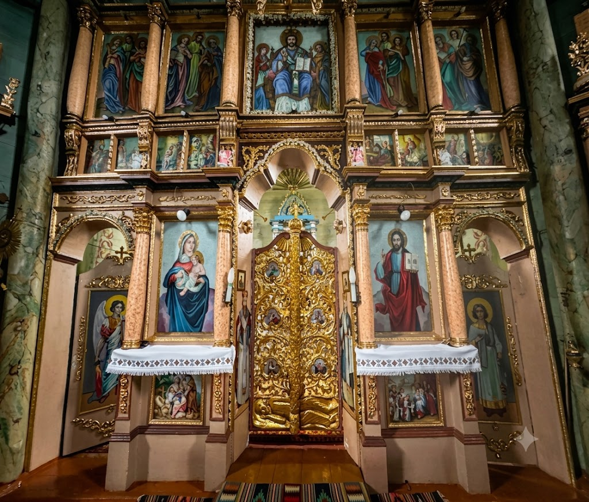
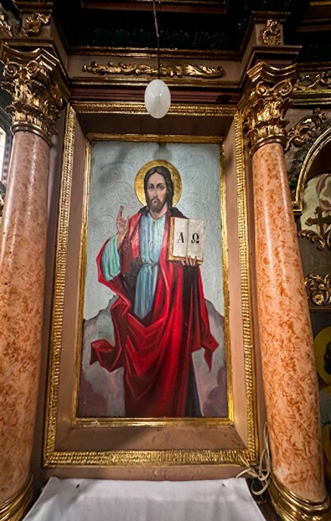
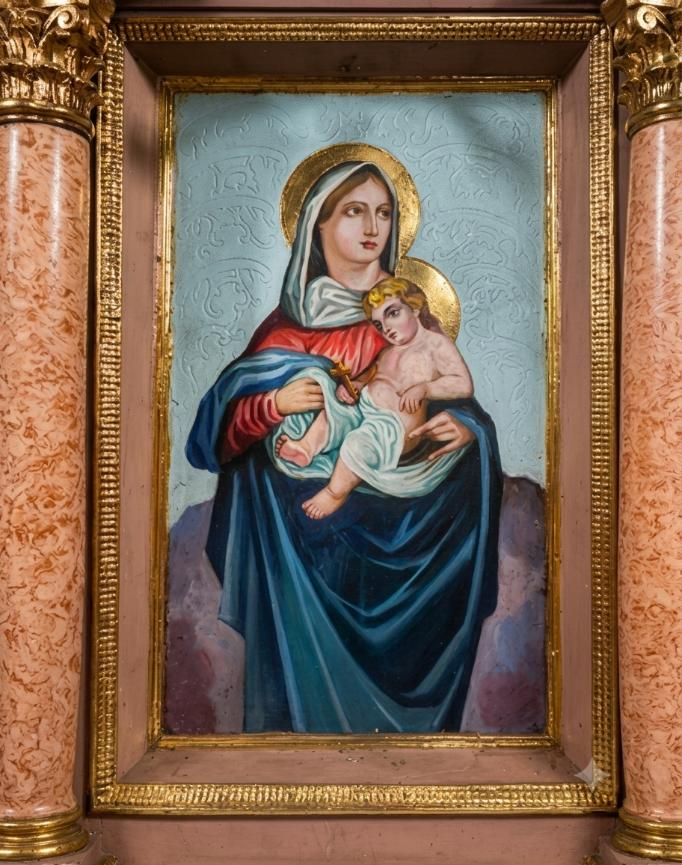
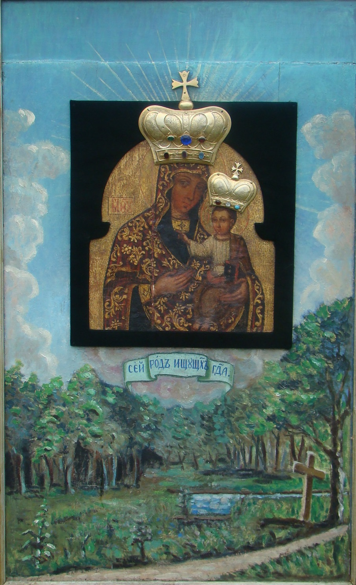
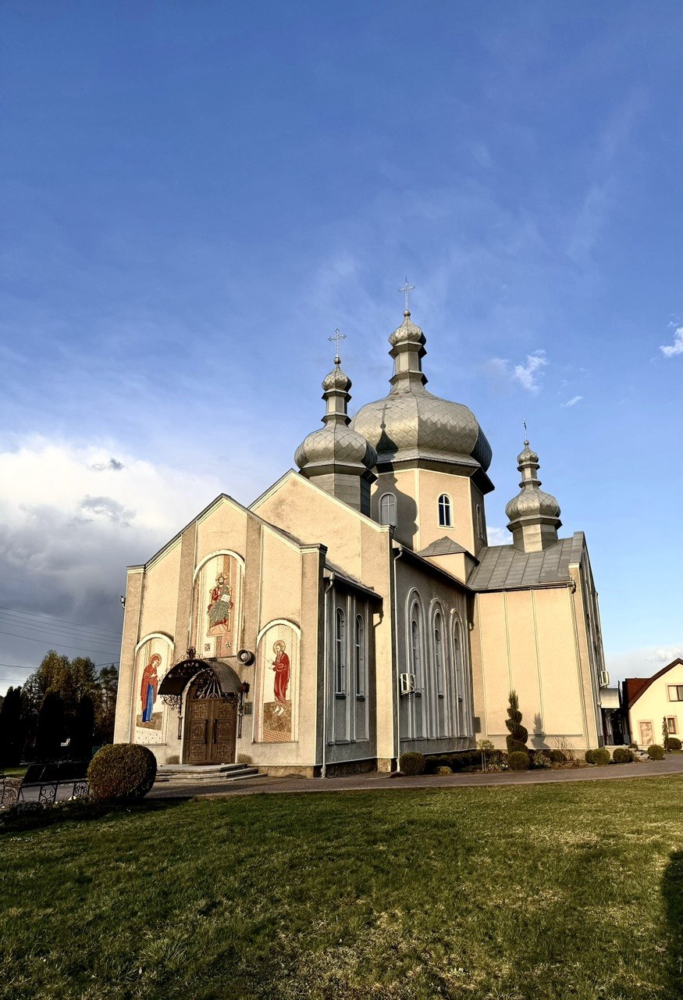
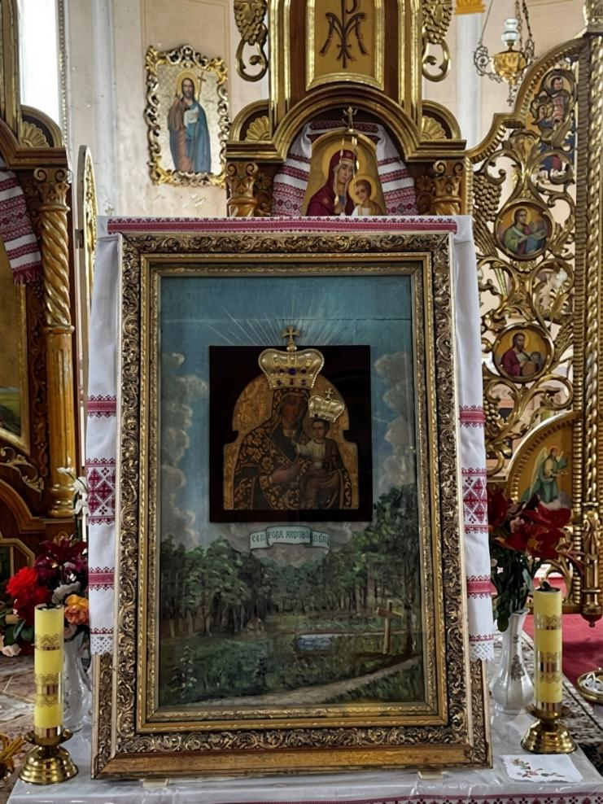

Шлях віри крізь століття
Дерев'яна церква Воскресіння Христового, що сьогодні розташована в центрі села Липівка, є однією з найдавніших духовних і культурних пам'яток громади. Її історія нерозривно пов'язана з урочищем «Монастир», де, за місцевими переказами, колись існувало чернече поселення.
Близько 1700 року в урочищі «Монастир» була збудована й освячена дерев'яна церква Воскресіння Христового. Упродовж 1711–1724 років при ній діяв чоловічий Свято-Троїцький монастир, про який згадує український історик Іван Крип'якевич. Після закриття монастиря храм було розібрано та перевезено до центру села Липівка, де він знаходиться й донині. Церкву встановили на спеціально насипаному підвищенні, яке збереглося до наших днів. Храм збудований у візантійському стилі, має хрещатий план, а основною конструктивною особливістю є традиційний дерев'яний зруб.

Фото церкви
Первісний вигляд церкви частково змінився: спочатку вона була меншою, а у 1908 році до неї добудували захрестя. Первісно покрівля була виконана з ґонту. Рішенням Івано-Франківської обласної ради від 18 червня 1991 року дерев'яну церкву Воскресіння Христового взято під охорону як пам'ятку архітектури місцевого значення (охоронний № 980).
Особливе враження справляє внутрішній простір храму, який зберіг атмосферу давнини. Найціннішою святинею є старовинний іконостас, виконаний у традиціях східнохристиянського мистецтва.

Фото іконостасу
Центральні ікони написані на суцільних липових дошках, прикрашені позолоченими німбами, а завершують композицію різьблені вазони та постаті ангелів, що надають іконостасу особливої величі та духовної краси.


Фото ікон
Церква Воскресіння Христового є не лише цінною пам'яткою сакральної архітектури, а й живим символом віри, історії та духовної спадщини нашої громади. Протягом століть вона була свідком молитов, радощів і випробувань багатьох поколінь парафіян.
Особливе місце в історії Свято-Троїцького монастиря, дерев'яної церкви Воскресіння Христового та всієї парафії займає чудотворна ікона Божої Матері «Одигітрія». Вона є однією з найцінніших духовних святинь Липівки та вже багато століть залишається символом Божої присутності й опіки над місцевою громадою. За давніми переказами, після закриття Свято-Троїцького монастиря дерев'яну церкву було перенесено до центру села. Разом із храмом парафіяни перенесли й чудотворну ікону. Старожили розповідають, що ікона тричі чудесним чином поверталася до свого первісного місця в урочищі «Монастир», де плавала на водах монастирського джерела. Кожного разу жителі села урочистою процесією переносили святиню назад до храму, вбачаючи в цих подіях особливий Божий знак.
Протягом багатьох років ікона зберігалася над престолом у церкві Воскресіння Христового. Починаючи з 2003 року, було відновлено давню традицію урочистої процесії: щороку 6 липня чудотворну ікону несуть до урочища «Монастир» — на місце, де, за переказами, вона об'явилася біля старого дуба та цілющого джерела. Ця проща збирає численних вірних із Липівки та навколишніх сіл. У 1887 році ікону прикрасили двома срібними коронами, покритими золотом, які були встановлені на голови Пресвятої Богородиці та Ісуса Христа. До цього корони були лише намальовані. За написом на короні Богородиці вважають, що їхнім жертводавцем була Анеля Майковська. Обидві корони оздоблені дев'ятьма коштовними каменями, що підкреслює особливе почитання святині.

Фото ікони
У 2003 році чудотворну ікону було передано на професійну реставрацію, яку виконав художник-реставратор Валерій Твердохліб. Дослідження підтвердили її виняткову історичну та мистецьку цінність. Ікона має розмір 37 × 42 см і, за висновками реставратора, є унікальною серед чудотворних ікон Прикарпаття.
Під час реставрації було виявлено чотири живописні нашарування, які свідчать про неодноразове оновлення святині в різні історичні періоди. Найдавніший шар дозволив встановити, що ікона була написана ще у XVII столітті. Також реставратор виявив залишки старовинного вівтаря, у якому вона колись перебувала, а пізніші дослідження засвідчили, що у XIX столітті ікону було вмонтовано у декоративний щит із зображенням монастирського краєвиду — дуба, джерела та дороги, що нагадували про її походження.
У другій половині XX століття пейзаж на щиті був частково оновлений місцевим учителем Іваном Бойчуком. Осінній краєвид замінили весняно-літнім, оскільки саме влітку, 7 липня, у Липівці традиційно відзначають храмове свято.
До сьогодні чудотворна ікона Божої Матері «Одигітрія» залишається осередком особливого почитання. Щороку 6 липня сотні паломників беруть участь у молитовній ході до урочища «Монастир» та монастирського джерела. За багаторічною традицією вода з цього джерела вважається цілющою, особливо при захворюваннях очей, а численні свідчення вірян підтримують живу пам'ять про ласки, отримані за заступництвом Пресвятої Богородиці.
Чудотворна ікона «Одигітрія» є не лише безцінною пам'яткою сакрального мистецтва XVII століття, а передусім живою святинею, яка вже багато поколінь об'єднує громаду Липівки в молитві, зміцнює віру та нагадує про нерозривний духовний зв'язок між урочищем «Монастир», давнім монастирем і сучасною парафією.
На сьогодні чудотворна ікона Божої Матері «Одигітрія» перебуває в новозбудованій церкві священномученика Йосафата, спорудженій у 2001 році.

Фото нової церкви
Храм розташований поруч із історичною дерев'яною церквою Воскресіння Христового, що є пам'яткою сакральної архітектури та колишнім місцем зберігання святині. Перенесення ікони до нового храму забезпечило можливість гідного вшанування святині численними парафіянами та паломниками, водночас зберігши нерозривний духовний зв'язок між давньою та сучасною історією парафії.

Фото як ікона в новій церкві
Сьогодні чудотворна ікона залишається головною духовною святинею громади, перед якою щоденно лунають молитви, а щороку, у переддень свята Різдва святого Івана Хрестителя, парафіяльна громада урочистою процесійною ходою переносить чудотворну ікону Божої Матері «Одигітрія» до урочища «Монастир». Саме тут, на місці давнього Свято-Троїцького монастиря, біля старовинного дуба та цілющого джерела, звершуються святкові моління за участю численних парафіян і паломників.